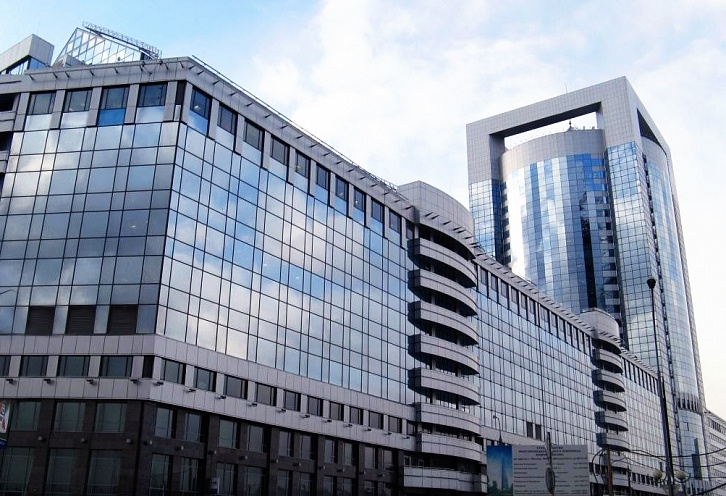

Северная башня
Единственное «зеленое» здание Москва-Сити с рекордным атриумом

Характеристики
- Высота:108 м
- Годы строительства:2005-2008
- Девелопер:«Северная Башня»
- Застройщик:STRABAG
- Общая площадь:135 000 м²
- Скорость лифтов:7 м/с
- Количество этажей:26 надземных + 2 подземных
- Количество машино-мест:674
- Участок:19
Архитектурные рекорды
Строение отличает необычная архитектура: здание венчает возвышающаяся башня, в которой под прозрачным куполом расположены офисные помещения. Центральный атриум башни имеет высоту 80 метров, что является европейским рекордом.
🌿 Единственное «зеленое» здание
Северная башня — единственное «зеленое» здание в «Москва-Сити». При строительстве и эксплуатации использованы энергоэффективные технологии, снижающие потребление ресурсов и воздействие на окружающую среду.
🏢 Преимущества для арендаторов
Уникальная архитектура с огромным светопрозрачным атриумом создает комфортную рабочую атмосферу и наполняет помещения естественным светом. Благодаря удачному расположению и современным инженерным решениям, Северная башня остается востребованной среди компаний, ценящих экологичность и комфорт.
Как добраться
📍 Адрес: Пресненская набережная, 8, Москва
🚇 Метро: Выставочная, Международная, Деловой центр